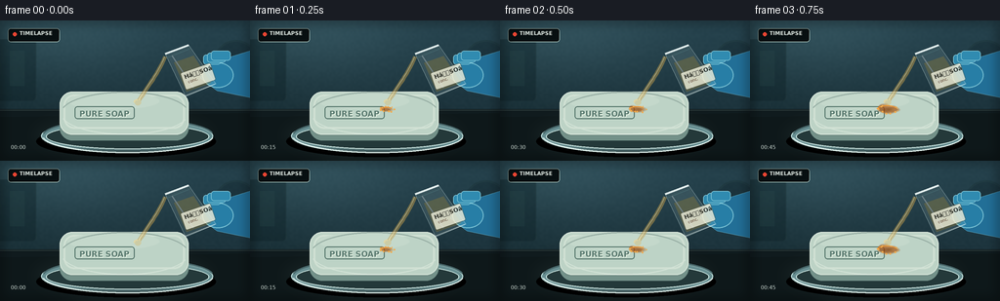
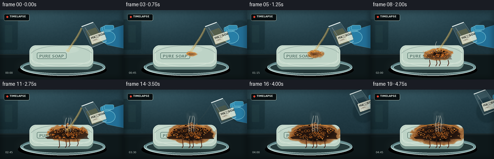
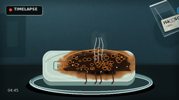

CODING AGENTS AS PIXEL WORLD MODELS
traex/GPT-5.6-Sol · material_0042
点击播放 · 原生 RGB 像素
逐轮保存的候选
回放视频、检查图与代码变化。
每份候选均可单独播放。实际图片检查记录在下方工具轨迹中。
候选 01播放与检查图
点击播放 · 原生 RGB 像素


展开代码变化
--- 上一保存版本
+++ 本次保存版本
@@ -0,0 +1,327 @@
+from pathlib import Path
+import math
+import numpy as np
+from PIL import Image, ImageDraw, ImageFont, ImageFilter
+import artifact_io
+
+CASE_DIR = Path(__file__).resolve().parent
+W, H, N = 256, 144, 20
+S = 3
+WS, HS = W*S, H*S
+rng = np.random.default_rng(4207)
+
+def sc(v): return int(round(v*S))
+def box(vals): return tuple(sc(v) for v in vals)
+def smooth(a, b, x):
+ if b == a: return float(x >= b)
+ z = max(0.0, min(1.0, (x-a)/(b-a)))
+ return z*z*(3-2*z)
+
+def font(size, bold=False):
+ p = "/usr/share/fonts/truetype/dejavu/DejaVuSans-Bold.ttf" if bold else "/usr/share/fonts/truetype/dejavu/DejaVuSans.ttf"
+ return ImageFont.truetype(p, sc(size))
+
+# Stable fine texture fields for coherent timelapse.
+def noise_field(seed, blur=2.0, low=(70, 40)):
+ rr = np.random.default_rng(seed)
+ raw = (rr.random((low[1], low[0]))*255).astype(np.uint8)
+ im = Image.fromarray(raw, 'L').resize((WS, HS), Image.Resampling.BICUBIC)
+ if blur: im = im.filter(ImageFilter.GaussianBlur(sc(blur)))
+ return np.asarray(im).astype(np.float32)/255.0
+
+noise_a = noise_field(3, .7)
+noise_b = noise_field(8, 2.1, (35, 22))
+noise_c = noise_field(12, .35, (120, 65))
+yy, xx = np.mgrid[0:HS, 0:WS]
+X, Y = xx/S, yy/S
+
+# Soap masks stay fixed to avoid contour shimmer.
+soap_top_mask = Image.new('L', (WS, HS), 0)
+md = ImageDraw.Draw(soap_top_mask)
+md.rounded_rectangle(box((61, 73, 193, 117)), radius=sc(13), fill=255)
+# Flatten lower edge a little to suggest perspective.
+md.rectangle(box((66, 94, 188, 110)), fill=255)
+soap_mask_np = np.asarray(soap_top_mask).astype(np.float32)/255
+
+# Stable bubble layout.
+bubbles = []
+for j in range(72):
+ ang = rng.uniform(0, 2*math.pi)
+ rad = math.sqrt(rng.random())
+ bx = 140 + math.cos(ang)*rad*44
+ by = 91 + math.sin(ang)*rad*15
+ birth = 0.12 + rad*0.55 + rng.uniform(-.12, .10)
+ size = rng.uniform(1.0, 3.4)*(1.15-.45*rad)
+ bubbles.append((bx, by, max(.08, birth), size, rng.uniform(0,1)))
+
+# Stable smoke strands.
+smoke_params = []
+for j in range(7):
+ smoke_params.append((rng.uniform(-12,12), rng.uniform(0,6), rng.uniform(-1,1), rng.uniform(0,6.28)))
+
+def background():
+ # Cool laboratory wall and dark slate work surface.
+ arr = np.zeros((HS, WS, 3), np.float32)
+ y = np.linspace(0,1,HS)[:,None]
+ x = np.linspace(0,1,WS)[None,:]
+ arr[:,:,0] = 20 + 13*(1-y) + 4*x
+ arr[:,:,1] = 39 + 22*(1-y) + 5*x
+ arr[:,:,2] = 45 + 25*(1-y) + 7*x
+ # Soft upper-left key light.
+ glow = np.exp(-(((X-65)/105)**2 + ((Y-12)/52)**2))
+ arr += glow[:,:,None]*np.array([16,20,21])[None,None,:]
+ # Subtle wall grain.
+ grain = (noise_c-.5)*3.0
+ arr += grain[:,:,None]
+ arr = np.clip(arr,0,255).astype(np.uint8)
+ im = Image.fromarray(arr, 'RGB')
+ d = ImageDraw.Draw(im, 'RGBA')
+ # Defocused lab shapes in background.
+ d.rounded_rectangle(box((-15,19,37,83)), radius=sc(5), fill=(10,29,34,100), outline=(79,113,116,25), width=sc(1))
+ d.rectangle(box((10,31,25,67)), fill=(46,77,79,60))
+ d.ellipse(box((218,20,265,70)), fill=(4,20,25,60), outline=(83,119,123,18), width=sc(2))
+ # Bench with reflection.
+ d.rectangle(box((0,91,256,144)), fill=(16,27,30,255))
+ d.line((0,sc(92),WS,sc(92)), fill=(105,128,124,65), width=sc(1))
+ d.polygon([(0,sc(99)),(WS,sc(95)),(WS,HS),(0,HS)], fill=(12,22,24,150))
+ # Broad pool of key light on bench.
+ ov = Image.new('RGBA',(WS,HS),(0,0,0,0))
+ od = ImageDraw.Draw(ov)
+ od.ellipse(box((28,87,224,148)), fill=(83,104,98,28))
+ ov = ov.filter(ImageFilter.GaussianBlur(sc(9)))
+ return Image.alpha_composite(im.convert('RGBA'),ov)
+
+def draw_dish_and_soap(im):
+ d = ImageDraw.Draw(im, 'RGBA')
+ # Object contact and glass dish shadows.
+ d.ellipse(box((37,108,221,140)), fill=(0,0,0,115))
+ d.ellipse(box((42,101,218,136)), fill=(103,142,145,18), outline=(192,224,220,82), width=sc(1))
+ d.ellipse(box((47,106,214,132)), fill=(36,57,58,45), outline=(205,231,226,52), width=sc(1))
+ d.arc(box((43,100,219,136)), 8, 172, fill=(226,244,239,118), width=sc(1.2))
+ d.arc(box((43,100,219,136)), 188, 350, fill=(72,103,106,62), width=sc(2))
+ # Soap side body, then top surface.
+ d.rounded_rectangle(box((61,79,193,123)), radius=sc(13), fill=(115,145,137,255))
+ d.rectangle(box((67,100,187,118)), fill=(112,140,132,255))
+ d.rounded_rectangle(box((61,73,193,117)), radius=sc(13), fill=(189,211,198,255), outline=(217,231,219,190), width=sc(1))
+ # Soft bevel and waxy illumination.
+ bevel = Image.new('RGBA',(WS,HS),(0,0,0,0))
+ bd = ImageDraw.Draw(bevel)
+ bd.rounded_rectangle(box((65,76,189,111)), radius=sc(11), outline=(244,250,237,88), width=sc(2))
+ bd.ellipse(box((69,74,163,91)), fill=(246,251,238,32))
+ bd.arc(box((62,73,193,117)), 18, 165, fill=(250,255,246,92), width=sc(1))
+ bd.arc(box((62,73,193,117)), 195, 344, fill=(62,88,83,72), width=sc(1.5))
+ im.alpha_composite(bevel)
+ # Embossed soap mark (subtle, disappears under reaction).
+ td = ImageDraw.Draw(im, 'RGBA')
+ f = font(8, True)
+ label = "PURE SOAP"
+ bb = td.textbbox((0,0), label, font=f)
+ tx = sc(107)-(bb[2]-bb[0])//2
+ ty = sc(94)-(bb[3]-bb[1])//2
+ td.rounded_rectangle((tx-sc(5),ty-sc(3),tx+(bb[2]-bb[0])+sc(5),ty+(bb[3]-bb[1])+sc(4)), radius=sc(3), outline=(83,115,105,68), width=sc(1))
+ td.text((tx+sc(.5),ty+sc(.7)), label, font=f, fill=(238,247,233,58))
+ td.text((tx,ty), label, font=f, fill=(91,123,113,83))
+
+def draw_reaction(im, p, frame_index):
+ if p <= 0: return
+ # Organic, irregular expansion field, clipped to top of soap.
+ dx = (X-140)/53
+ dy = (Y-91)/22
+ dist = np.sqrt(dx*dx + dy*dy)
+ field = dist + (noise_b-.5)*.24 + (noise_a-.5)*.065
+ limit = .10 + p*.98
+ coverage = np.clip((limit-field)/.075 + .5, 0, 1) * soap_mask_np
+ # Local reaction age controls amber -> mahogany -> black progression.
+ onset = np.clip((field-.06)/.98,0,1)
+ age = np.clip((p-onset)/.40,0,1)
+ edge = np.clip(1-age,0,1)
+ # Surface texture: ochre wet rim, dark brown body, carbon-black center.
+ amber = np.array([170,91,25],np.float32)
+ brown = np.array([77,37,19],np.float32)
+ black = np.array([22,17,14],np.float32)
+ c1 = amber[None,None,:]*(1-age[:,:,None]) + brown[None,None,:]*age[:,:,None]
+ blackmix = np.clip((age-.52)/.48,0,1)[:,:,None]
+ color = c1*(1-blackmix)+black[None,None,:]*blackmix
+ tex = ((noise_c-.5)*20 + (noise_a-.5)*11)[:,:,None]
+ color = np.clip(color+tex,0,255).astype(np.uint8)
+ alpha = (coverage*(.72+.28*age)*255).astype(np.uint8)
+ layer = Image.fromarray(np.dstack([color,alpha]),'RGBA')
+ im.alpha_composite(layer)
+
+ d = ImageDraw.Draw(im,'RGBA')
+ # Glossy acid-wet perimeter and trickles over near edge.
+ rx = 5 + 45*p
+ ry = 2 + 18*p
+ d.arc(box((140-rx,91-ry,140+rx,91+ry)), 195, 338, fill=(232,145,49,int(120*(1-p*.55))), width=sc(1.1))
+ if p > .35:
+ for k in range(4):
+ q = smooth(.35+.08*k,.72+.05*k,p)
+ x0 = 122 + k*12 + math.sin(k*2.4)*3
+ d.line([ (sc(x0),sc(103)), (sc(x0+1.5),sc(110+7*q)), (sc(x0-1),sc(116+5*q)) ], fill=(69,29,15,int(150*q)), width=sc(1.3))
+
+ # Raised foamy char mound. It grows upward in accelerated timelapse.
+ rise = smooth(.16,.82,p)
+ if rise > 0:
+ mound = Image.new('RGBA',(WS,HS),(0,0,0,0))
+ md = ImageDraw.Draw(mound,'RGBA')
+ mw = 12 + 35*rise
+ mh = 3 + 19*rise
+ cx, base = 141, 99
+ pts=[]
+ for k in range(19):
+ a=math.pi + math.pi*k/18
+ wob=1+0.10*math.sin(k*2.7+1.3)+0.06*math.sin(k*5.1)
+ pts.append((sc(cx+math.cos(a)*mw*wob),sc(base+math.sin(a)*mh*wob)))
+ pts += [(sc(cx+mw),sc(base+3)),(sc(cx-mw),sc(base+3))]
+ md.polygon(pts, fill=(35,20,13,int(225*rise)))
+ md.arc(box((cx-mw,base-mh,cx+mw,base+mh*.7)),190,347,fill=(152,73,25,int(95*rise)),width=sc(1))
+ im.alpha_composite(mound)
+
+ # Individual carbon bubbles and honeycomb pores.
+ d = ImageDraw.Draw(im,'RGBA')
+ for bx,by,birth,size,var in bubbles:
+ grow = smooth(birth,birth+.20,p)
+ if grow <= 0: continue
+ # Bubbles lift with the central mound.
+ central = max(0,1-abs(bx-140)/48)
+ lift = rise*central*(5.5+4*var)
+ r = size*(.35+.8*grow)
+ cy = by-lift
+ # Early bubbles amber, old ones nearly black.
+ old = smooth(birth+.10,birth+.38,p)
+ col = tuple(int((1-old)*v1+old*v2) for v1,v2 in zip((135,61,18),(27,18,13)))
+ d.ellipse(box((bx-r,cy-r*.7,bx+r,cy+r*.7)), fill=(*col,int(205*grow)), outline=(207,112,38,int(105*grow)), width=sc(.55))
+ if old>.25 and r>1.2:
+ pr=r*(.20+.18*var)
+ d.ellipse(box((bx-pr,cy-pr*.7,bx+pr,cy+pr*.7)), fill=(6,8,7,int(150*old)))
+ else:
+ d.ellipse(box((bx-r*.42,cy-r*.43,bx-r*.05,cy-r*.1)), fill=(255,192,81,int(90*grow)))
+
+ # Tiny bright fizz at active perimeter.
+ for j in range(18):
+ ang=(j*2.399 + frame_index*.31)
+ rad=(8+37*p)*(0.65+0.35*((j*37)%11)/10)
+ bx=140+math.cos(ang)*rad
+ by=91+math.sin(ang)*rad*.38
+ if 63<bx<191 and 76<by<114 and ((j+frame_index)%3):
+ r=.45+((j*13)%5)*.10
+ d.ellipse(box((bx-r,by-r,bx+r,by+r)),fill=(243,171,75,int(135*(1-p*.35))))
+
+def draw_smoke(im,p,frame_index):
+ s = smooth(.28,.92,p)
+ if s<=0: return
+ smoke=Image.new('RGBA',(WS,HS),(0,0,0,0))
+ sd=ImageDraw.Draw(smoke,'RGBA')
+ for j,(off,phase,lean,wave) in enumerate(smoke_params):
+ appear=smooth(.25+j*.025,.52+j*.035,p)
+ if appear<=0: continue
+ pts=[]
+ for k in range(15):
+ u=k/14
+ x=140+off*(1-u)+lean*12*u+math.sin(u*7+wave+frame_index*.19)*3.5*u
+ y=88-off*.05-u*(20+23*s)-math.sin(u*3+phase)*1.7
+ pts.append((sc(x),sc(y)))
+ alpha=int(36*s*appear*(1-j*.055))
+ sd.line(pts, fill=(205,210,199,alpha), width=sc(2.0+1.4*u), joint='curve')
+ smoke=smoke.filter(ImageFilter.GaussianBlur(sc(2.4)))
+ im.alpha_composite(smoke)
+ # A few sharper translucent cores preserve wispy structure.
+ sd2=ImageDraw.Draw(im,'RGBA')
+ for j in range(3):
+ if s>.15+j*.12:
+ pts=[]
+ for k in range(10):
+ u=k/9
+ pts.append((sc(136+j*5+math.sin(u*6+j+frame_index*.12)*2*u),sc(87-u*(19+14*s))))
+ sd2.line(pts,fill=(224,224,211,int(24*s)),width=sc(.65))
+
+def draw_pourer(im,t,p,frame_index):
+ # Beaker withdraws only near the end, leaving the completed reaction visible.
+ withdraw=smooth(.67,.86,t)
+ ox=withdraw*45
+ oy=-withdraw*25
+ stream_strength=(1-smooth(.61,.76,t))
+ # Stream behind vessel but in front of scene.
+ if stream_strength>.02:
+ stream=Image.new('RGBA',(WS,HS),(0,0,0,0))
+ sd=ImageDraw.Draw(stream,'RGBA')
+ sx,sy=169+ox,37+oy
+ ex,ey=141,84
+ pts=[]
+ for k in range(17):
+ u=k/16
+ x=(1-u)*sx+u*ex + 2.4*math.sin(u*math.pi)*(1-u)
+ y=(1-u)*sy+u*ey
+ pts.append((sc(x),sc(y)))
+ sd.line(pts,fill=(194,157,76,int(125*stream_strength)),width=sc(3.4*stream_strength+1),joint='curve')
+ sd.line([(x-sc(.55),y) for x,y in pts],fill=(255,237,175,int(155*stream_strength)),width=sc(.75),joint='curve')
+ # Impact glint and splash beads.
+ sd.ellipse(box((137.7,81,144.3,87)),fill=(226,171,66,int(70*stream_strength)))
+ for q in range(4):
+ a=-2.8+q*.5
+ rr=4+q*.6
+ bx=141+math.cos(a)*rr; by=84+math.sin(a)*rr*.55
+ sd.ellipse(box((bx-.7,by-.7,bx+.7,by+.7)),fill=(250,212,127,int(135*stream_strength)))
+ im.alpha_composite(stream)
+
+ # Nitrile-gloved hand, gripping the beaker from right.
+ d=ImageDraw.Draw(im,'RGBA')
+ def P(x,y): return (sc(x+ox),sc(y+oy))
+ d.polygon([P(211,45),P(256,31),P(256,79),P(222,72),P(205,59)],fill=(34,111,151,255),outline=(102,178,201,150))
+ d.ellipse(box((207+ox,43+oy,239+ox,69+oy)),fill=(39,126,166,255),outline=(116,190,209,135),width=sc(1))
+ for k in range(3):
+ d.rounded_rectangle(box((208+ox+k*4,35+oy-k*2,226+ox+k*5,45+oy-k*2)),radius=sc(3),fill=(48,139,176,245),outline=(128,198,214,95),width=sc(.7))
+ # Tilted glass beaker: transparent body with receding acid level.
+ vessel=Image.new('RGBA',(WS,HS),(0,0,0,0))
+ vd=ImageDraw.Draw(vessel,'RGBA')
+ poly=[P(169,34),P(193,25),P(221,65),P(190,78)]
+ vd.polygon(poly,fill=(203,233,231,30),outline=(220,244,242,180))
+ # Liquid inside, lower level as it pours.
+ liquid_drop=min(14,t*15)
+ lpoly=[P(178,43+liquid_drop*.25),P(198,36+liquid_drop*.25),P(216,64),P(191,73)]
+ vd.polygon(lpoly,fill=(210,178,87,int(75*(1-withdraw))))
+ vd.line([P(169,34),P(193,25)],fill=(244,255,252,230),width=sc(2))
+ vd.line([P(171,38),P(194,29)],fill=(121,172,172,110),width=sc(.7))
+ vd.line([P(190,77),P(220,65)],fill=(245,255,252,155),width=sc(1))
+ vd.line([P(176,36),P(198,69)],fill=(255,255,255,90),width=sc(1))
+ # Acid label follows approximate body angle.
+ lab=Image.new('RGBA',(sc(33),sc(19)),(0,0,0,0))
+ ld=ImageDraw.Draw(lab)
+ ld.rounded_rectangle((0,0,lab.width-1,lab.height-1),radius=sc(2),fill=(238,238,218,205),outline=(88,92,77,120),width=sc(.7))
+ ld.text((sc(3),sc(2)),"HâSOâ",font=font(6,True),fill=(40,42,36,230))
+ ld.text((sc(5),sc(9)),"conc.",font=font(4),fill=(83,49,31,220))
+ lab=lab.rotate(19,resample=Image.Resampling.BICUBIC,expand=True)
+ vessel.alpha_composite(lab,(sc(184+ox),sc(43+oy)))
+ im.alpha_composite(vessel)
+
+def draw_hud(im,frame_index):
+ # Minimal documentary timelapse cue.
+ d=ImageDraw.Draw(im,'RGBA')
+ d.rounded_rectangle(box((8,8,61,22)),radius=sc(3),fill=(7,15,17,110),outline=(171,197,189,30),width=sc(.6))
+ d.ellipse(box((13,12,17,16)),fill=(235,69,50,220))
+ d.text((sc(20),sc(10)),"TIMELAPSE",font=font(5.2,True),fill=(224,234,228,220))
+ elapsed=frame_index*15
+ d.text((sc(11),sc(127)),f"{elapsed//60:02d}:{elapsed%60:02d}",font=font(5.3),fill=(211,224,217,165))
+ # Fine optical vignette.
+ vig=Image.new('RGBA',(WS,HS),(0,0,0,0)); v=ImageDraw.Draw(vig)
+ v.rectangle((0,0,WS-1,HS-1),outline=(0,0,0,80),width=sc(4))
+ vig=vig.filter(ImageFilter.GaussianBlur(sc(5)))
+ im.alpha_composite(vig)
+
+def make_frame(i):
+ t=i/(N-1)
+ # Reaction starts at contact and accelerates, as expected in timelapse.
+ p=smooth(.015,1.0,t)**.76
+ im=background()
+ draw_dish_and_soap(im)
+ draw_reaction(im,p,i)
+ draw_smoke(im,p,i)
+ draw_pourer(im,t,p,i)
+ draw_hud(im,i)
+ # Downsample gives natural edge antialiasing.
+ out=im.convert('RGB').resize((W,H),Image.Resampling.LANCZOS)
+ return np.asarray(out,dtype=np.uint8)
+
+frames=np.stack([make_frame(i) for i in range(N)],axis=0)
+artifact_io.save(frames,CASE_DIR)
+print(f"saved {frames.shape} RGB frames to {CASE_DIR}")
可观测工具轨迹
实际执行的命令与返回图片。
命令 1exit 0
/bin/bash -lc "cat prompt.txt && printf '\\n--- GENERATION_RULES ---\\n' && cat GENERATION_RULES.md && printf '\\n--- TASK_SPEC ---\\n' && cat task_spec.json"
命令 2exit 0
/bin/bash -lc "find . -maxdepth 2 -type f -printf '%p\\n' | sort && printf '\\nTools:\\n' && command -v ffmpeg || true && command -v python3 || true && command -v blender || true"
命令 3exit 0
/bin/bash -lc 'cat artifact_io.py'
命令 4exit 0
/bin/bash -lc "cat > generate.py <<'PY'
from pathlib import Path
import math
import numpy as np
from PIL import Image, ImageDraw, ImageFont, ImageFilter
import artifact_io
CASE_DIR = Path(__file__).resolve().parent
W, H, N = 256, 144, 20
S = 3
WS, HS = W*S, H*S
rng = np.random.default_rng(4207)
def sc(v): return int(round(v*S))
def box(vals): return tuple(sc(v) for v in vals)
def smooth(a, b, x):
if b == a: return float(x >= b)
z = max(0.0, min(1.0, (x-a)/(b-a)))
return z*z*(3-2*z)
def font(size, bold=False):
p = \"/usr/share/fonts/truetype/dejavu/DejaVuSans-Bold.ttf\" if bold else \"/usr/share/fonts/truetype/dejavu/DejaVuSans.ttf\"
return ImageFont.truetype(p, sc(size))
# Stable fine texture fields for coherent timelapse.
def noise_field(seed, blur=2.0, low=(70, 40)):
rr = np.random.default_rng(seed)
raw = (rr.random((low[1], low[0]))*255).astype(np.uint8)
im = Image.fromarray(raw, 'L').resize((WS, HS), Image.Resampling.BICUBIC)
if blur: im = im.filter(ImageFilter.GaussianBlur(sc(blur)))
return np.asarray(im).astype(np.float32)/255.0
noise_a = noise_field(3, .7)
noise_b = noise_field(8, 2.1, (35, 22))
noise_c = noise_field(12, .35, (120, 65))
yy, xx = np.mgrid[0:HS, 0:WS]
X, Y = xx/S, yy/S
# Soap masks stay fixed to avoid contour shimmer.
soap_top_mask = Image.new('L', (WS, HS), 0)
md = ImageDraw.Draw(soap_top_mask)
md.rounded_rectangle(box((61, 73, 193, 117)), radius=sc(13), fill=255)
# Flatten lower edge a little to suggest perspective.
md.rectangle(box((66, 94, 188, 110)), fill=255)
soap_mask_np = np.asarray(soap_top_mask).astype(np.float32)/255
# Stable bubble layout.
bubbles = []
for j in range(72):
ang = rng.uniform(0, 2*math.pi)
rad = math.sqrt(rng.random())
bx = 140 + math.cos(ang)*rad*44
by = 91 + math.sin(ang)*rad*15
birth = 0.12 + rad*0.55 + rng.uniform(-.12, .10)
size = rng.uniform(1.0, 3.4)*(1.15-.45*rad)
bubbles.append((bx, by, max(.08, birth), size, rng.uniform(0,1)))
# Stable smoke strands.
smoke_params = []
for j in range(7):
smoke_params.append((rng.uniform(-12,12), rng.uniform(0,6), rng.uniform(-1,1), rng.uniform(0,6.28)))
def background():
# Cool laboratory wall and dark slate work surface.
arr = np.zeros((HS, WS, 3), np.float32)
y = np.linspace(0,1,HS)[:,None]
x = np.linspace(0,1,WS)[None,:]
arr[:,:,0] = 20 + 13*(1-y) + 4*x
arr[:,:,1] = 39 + 22*(1-y) + 5*x
arr[:,:,2] = 45 + 25*(1-y) + 7*x
# Soft upper-left key light.
glow = np.exp(-(((X-65)/105)**2 + ((Y-12)/52)**2))
arr += glow[:,:,None]*np.array([16,20,21])[None,None,:]
# Subtle wall grain.
grain = (noise_c-.5)*3.0
arr += grain[:,:,None]
arr = np.clip(arr,0,255).astype(np.uint8)
im = Image.fromarray(arr, 'RGB')
d = ImageDraw.Draw(im, 'RGBA')
# Defocused lab shapes in background.
d.rounded_rectangle(box((-15,19,37,83)), radius=sc(5), fill=(10,29,34,100), outline=(79,113,116,25), width=sc(1))
d.rectangle(box((10,31,25,67)), fill=(46,77,79,60))
d.ellipse(box((218,20,265,70)), fill=(4,20,25,60), outline=(83,119,123,18), width=sc(2))
# Bench with reflection.
d.rectangle(box((0,91,256,144)), fill=(16,27,30,255))
d.line((0,sc(92),WS,sc(92)), fill=(105,128,124,65), width=sc(1))
d.polygon([(0,sc(99)),(WS,sc(95)),(WS,HS),(0,HS)], fill=(12,22,24,150))
# Broad pool of key light on bench.
ov = Image.new('RGBA',(WS,HS),(0,0,0,0))
od = ImageDraw.Draw(ov)
od.ellipse(box((28,87,224,148)), fill=(83,104,98,28))
ov = ov.filter(ImageFilter.GaussianBlur(sc(9)))
return Image.alpha_composite(im.convert('RGBA'),ov)
def draw_dish_and_soap(im):
d = ImageDraw.Draw(im, 'RGBA')
# Object contact and glass dish shadows.
d.ellipse(box((37,108,221,140)), fill=(0,0,0,115))
d.ellipse(box((42,101,218,136)), fill=(103,142,145,18), outline=(192,224,220,82), width=sc(1))
d.ellipse(box((47,106,214,132)), fill=(36,57,58,45), outline=(205,231,226,52), width=sc(1))
d.arc(box((43,100,219,136)), 8, 172, fill=(226,244,239,118), width=sc(1.2))
d.arc(box((43,100,219,136)), 188, 350, fill=(72,103,106,62), width=sc(2))
# Soap side body, then top surface.
d.rounded_rectangle(box((61,79,193,123)), radius=sc(13), fill=(115,145,137,255))
d.rectangle(box((67,100,187,118)), fill=(112,140,132,255))
d.rounded_rectangle(box((61,73,193,117)), radius=sc(13), fill=(189,211,198,255), outline=(217,231,219,190), width=sc(1))
# Soft bevel and waxy illumination.
bevel = Image.new('RGBA',(WS,HS),(0,0,0,0))
bd = ImageDraw.Draw(bevel)
bd.rounded_rectangle(box((65,76,189,111)), radius=sc(11), outline=(244,250,237,88), width=sc(2))
bd.ellipse(box((69,74,163,91)), fill=(246,251,238,32))
bd.arc(box((62,73,193,117)), 18, 165, fill=(250,255,246,92), width=sc(1))
bd.arc(box((62,73,193,117)), 195, 344, fill=(62,88,83,72), width=sc(1.5))
im.alpha_composite(bevel)
# Embossed soap mark (subtle, disappears under reaction).
td = ImageDraw.Draw(im, 'RGBA')
f = font(8, True)
label = \"PURE SOAP\"
bb = td.textbbox((0,0), label, font=f)
tx = sc(107)-(bb[2]-bb[0])//2
ty = sc(94)-(bb[3]-bb[1])//2
td.rounded_rectangle((tx-sc(5),ty-sc(3),tx+(bb[2]-bb[0])+sc(5),ty+(bb[3]-bb[1])+sc(4)), radius=sc(3), outline=(83,115,105,68), width=sc(1))
td.text((tx+sc(.5),ty+sc(.7)), label, font=f, fill=(238,247,233,58))
td.text((tx,ty), label, font=f, fill=(91,123,113,83))
def draw_reaction(im, p, frame_index):
if p <= 0: return
# Organic, irregular expansion field, clipped to top of soap.
dx = (X-140)/53
dy = (Y-91)/22
dist = np.sqrt(dx*dx + dy*dy)
field = dist + (noise_b-.5)*.24 + (noise_a-.5)*.065
limit = .10 + p*.98
coverage = np.clip((limit-field)/.075 + .5, 0, 1) * soap_mask_np
# Local reaction age controls amber -> mahogany -> black progression.
onset = np.clip((field-.06)/.98,0,1)
age = np.clip((p-onset)/.40,0,1)
edge = np.clip(1-age,0,1)
# Surface texture: ochre wet rim, dark brown body, carbon-black center.
amber = np.array([170,91,25],np.float32)
brown = np.array([77,37,19],np.float32)
black = np.array([22,17,14],np.float32)
c1 = amber[None,None,:]*(1-age[:,:,None]) + brown[None,None,:]*age[:,:,None]
blackmix = np.clip((age-.52)/.48,0,1)[:,:,None]
color = c1*(1-blackmix)+black[None,None,:]*blackmix
tex = ((noise_c-.5)*20 + (noise_a-.5)*11)[:,:,None]
color = np.clip(color+tex,0,255).astype(np.uint8)
alpha = (coverage*(.72+.28*age)*255).astype(np.uint8)
layer = Image.fromarray(np.dstack([color,alpha]),'RGBA')
im.alpha_composite(layer)
d = ImageDraw.Draw(im,'RGBA')
# Glossy acid-wet perimeter and trickles over near edge.
rx = 5 + 45*p
ry = 2 + 18*p
d.arc(box((140-rx,91-ry,140+rx,91+ry)), 195, 338, fill=(232,145,49,int(120*(1-p*.55))), width=sc(1.1))
if p > .35:
for k in range(4):
q = smooth(.35+.08*k,.72+.05*k,p)
x0 = 122 + k*12 + math.sin(k*2.4)*3
d.line([ (sc(x0),sc(103)), (sc(x0+1.5),sc(110+7*q)), (sc(x0-1),sc(116+5*q)) ], fill=(69,29,15,int(150*q)), width=sc(1.3))
# Raised foamy char mound. It grows upward in accelerated timelapse.
rise = smooth(.16,.82,p)
if rise > 0:
mound = Image.new('RGBA',(WS,HS),(0,0,0,0))
md = ImageDraw.Draw(mound,'RGBA')
mw = 12 + 35*rise
mh = 3 + 19*rise
cx, base = 141, 99
pts=[]
for k in range(19):
a=math.pi + math.pi*k/18
wob=1+0.10*math.sin(k*2.7+1.3)+0.06*math.sin(k*5.1)
pts.append((sc(cx+math.cos(a)*mw*wob),sc(base+math.sin(a)*mh*wob)))
pts += [(sc(cx+mw),sc(base+3)),(sc(cx-mw),sc(base+3))]
md.polygon(pts, fill=(35,20,13,int(225*rise)))
md.arc(box((cx-mw,base-mh,cx+mw,base+mh*.7)),190,347,fill=(152,73,25,int(95*rise)),width=sc(1))
im.alpha_composite(mound)
# Individual carbon bubbles and honeycomb pores.
d = ImageDraw.Draw(im,'RGBA')
for bx,by,birth,size,var in bubbles:
grow = smooth(birth,birth+.20,p)
if grow <= 0: continue
# Bubbles lift with the central mound.
central = max(0,1-abs(bx-140)/48)
lift = rise*central*(5.5+4*var)
r = size*(.35+.8*grow)
cy = by-lift
# Early bubbles amber, old ones nearly black.
old = smooth(birth+.10,birth+.38,p)
col = tuple(int((1-old)*v1+old*v2) for v1,v2 in zip((135,61,18),(27,18,13)))
d.ellipse(box((bx-r,cy-r*.7,bx+r,cy+r*.7)), fill=(*col,int(205*grow)), outline=(207,112,38,int(105*grow)), width=sc(.55))
if old>.25 and r>1.2:
pr=r*(.20+.18*var)
d.ellipse(box((bx-pr,cy-pr*.7,bx+pr,cy+pr*.7)), fill=(6,8,7,int(150*old)))
else:
d.ellipse(box((bx-r*.42,cy-r*.43,bx-r*.05,cy-r*.1)), fill=(255,192,81,int(90*grow)))
# Tiny bright fizz at active perimeter.
for j in range(18):
ang=(j*2.399 + frame_index*.31)
rad=(8+37*p)*(0.65+0.35*((j*37)%11)/10)
bx=140+math.cos(ang)*rad
by=91+math.sin(ang)*rad*.38
if 63<bx<191 and 76<by<114 and ((j+frame_index)%3):
r=.45+((j*13)%5)*.10
d.ellipse(box((bx-r,by-r,bx+r,by+r)),fill=(243,171,75,int(135*(1-p*.35))))
def draw_smoke(im,p,frame_index):
s = smooth(.28,.92,p)
if s<=0: return
smoke=Image.new('RGBA',(WS,HS),(0,0,0,0))
sd=ImageDraw.Draw(smoke,'RGBA')
for j,(off,phase,lean,wave) in enumerate(smoke_params):
appear=smooth(.25+j*.025,.52+j*.035,p)
if appear<=0: continue
pts=[]
for k in range(15):
u=k/14
x=140+off*(1-u)+lean*12*u+math.sin(u*7+wave+frame_index*.19)*3.5*u
y=88-off*.05-u*(20+23*s)-math.sin(u*3+phase)*1.7
pts.append((sc(x),sc(y)))
alpha=int(36*s*appear*(1-j*.055))
sd.line(pts, fill=(205,210,199,alpha), width=sc(2.0+1.4*u), joint='curve')
smoke=smoke.filter(ImageFilter.GaussianBlur(sc(2.4)))
im.alpha_composite(smoke)
# A few sharper translucent cores preserve wispy structure.
sd2=ImageDraw.Draw(im,'RGBA')
for j in range(3):
if s>.15+j*.12:
pts=[]
for k in range(10):
u=k/9
pts.append((sc(136+j*5+math.sin(u*6+j+frame_index*.12)*2*u),sc(87-u*(19+14*s))))
sd2.line(pts,fill=(224,224,211,int(24*s)),width=sc(.65))
def draw_pourer(im,t,p,frame_index):
# Beaker withdraws only near the end, leaving the completed reaction visible.
withdraw=smooth(.67,.86,t)
ox=withdraw*45
oy=-withdraw*25
stream_strength=(1-smooth(.61,.76,t))
# Stream behind vessel but in front of scene.
if stream_strength>.02:
stream=Image.new('RGBA',(WS,HS),(0,0,0,0))
sd=ImageDraw.Draw(stream,'RGBA')
sx,sy=169+ox,37+oy
ex,ey=141,84
pts=[]
for k in range(17):
u=k/16
x=(1-u)*sx+u*ex + 2.4*math.sin(u*math.pi)*(1-u)
y=(1-u)*sy+u*ey
pts.append((sc(x),sc(y)))
sd.line(pts,fill=(194,157,76,int(125*stream_strength)),width=sc(3.4*stream_strength+1),joint='curve')
sd.line([(x-sc(.55),y) for x,y in pts],fill=(255,237,175,int(155*stream_strength)),width=sc(.75),joint='curve')
# Impact glint and splash beads.
sd.ellipse(box((137.7,81,144.3,87)),fill=(226,171,66,int(70*stream_strength)))
for q in range(4):
a=-2.8+q*.5
rr=4+q*.6
bx=141+math.cos(a)*rr; by=84+math.sin(a)*rr*.55
sd.ellipse(box((bx-.7,by-.7,bx+.7,by+.7)),fill=(250,212,127,int(135*stream_strength)))
im.alpha_composite(stream)
# Nitrile-gloved hand, gripping the beaker from right.
d=ImageDraw.Draw(im,'RGBA')
def P(x,y): return (sc(x+ox),sc(y+oy))
d.polygon([P(211,45),P(256,31),P(256,79),P(222,72),P(205,59)],fill=(34,111,151,255),outline=(102,178,201,150))
d.ellipse(box((207+ox,43+oy,239+ox,69+oy)),fill=(39,126,166,255),outline=(116,190,209,135),width=sc(1))
for k in range(3):
d.rounded_rectangle(box((208+ox+k*4,35+oy-k*2,226+ox+k*5,45+oy-k*2)),radius=sc(3),fill=(48,139,176,245),outline=(128,198,214,95),width=sc(.7))
# Tilted glass beaker: transparent body with receding acid level.
vessel=Image.new('RGBA',(WS,HS),(0,0,0,0))
vd=ImageDraw.Draw(vessel,'RGBA')
poly=[P(169,34),P(193,25),P(221,65),P(190,78)]
vd.polygon(poly,fill=(203,233,231,30),outline=(220,244,242,180))
# Liquid inside, lower level as it pours.
liquid_drop=min(14,t*15)
lpoly=[P(178,43+liquid_drop*.25),P(198,36+liquid_drop*.25),P(216,64),P(191,73)]
vd.polygon(lpoly,fill=(210,178,87,int(75*(1-withdraw))))
vd.line([P(169,34),P(193,25)],fill=(244,255,252,230),width=sc(2))
vd.line([P(171,38),P(194,29)],fill=(121,172,172,110),width=sc(.7))
vd.line([P(190,77),P(220,65)],fill=(245,255,252,155),width=sc(1))
vd.line([P(176,36),P(198,69)],fill=(255,255,255,90),width=sc(1))
# Acid label follows approximate body angle.
lab=Image.new('RGBA',(sc(33),sc(19)),(0,0,0,0))
ld=ImageDraw.Draw(lab)
ld.rounded_rectangle((0,0,lab.width-1,lab.height-1),radius=sc(2),fill=(238,238,218,205),outline=(88,92,77,120),width=sc(.7))
ld.text((sc(3),sc(2)),\"HâSOâ\",font=font(6,True),fill=(40,42,36,230))
ld.text((sc(5),sc(9)),\"conc.\",font=font(4),fill=(83,49,31,220))
lab=lab.rotate(19,resample=Image.Resampling.BICUBIC,expand=True)
vessel.alpha_composite(lab,(sc(184+ox),sc(43+oy)))
im.alpha_composite(vessel)
def draw_hud(im,frame_index):
# Minimal documentary timelapse cue.
d=ImageDraw.Draw(im,'RGBA')
d.rounded_rectangle(box((8,8,61,22)),radius=sc(3),fill=(7,15,17,110),outline=(171,197,189,30),width=sc(.6))
d.ellipse(box((13,12,17,16)),fill=(235,69,50,220))
d.text((sc(20),sc(10)),\"TIMELAPSE\",font=font(5.2,True),fill=(224,234,228,220))
elapsed=frame_index*15
d.text((sc(11),sc(127)),f\"{elapsed//60:02d}:{elapsed%60:02d}\",font=font(5.3),fill=(211,224,217,165))
# Fine optical vignette.
vig=Image.new('RGBA',(WS,HS),(0,0,0,0)); v=ImageDraw.Draw(vig)
v.rectangle((0,0,WS-1,HS-1),outline=(0,0,0,80),width=sc(4))
vig=vig.filter(ImageFilter.GaussianBlur(sc(5)))
im.alpha_composite(vig)
def make_frame(i):
t=i/(N-1)
# Reaction starts at contact and accelerates, as expected in timelapse.
p=smooth(.015,1.0,t)**.76
im=background()
draw_dish_and_soap(im)
draw_reaction(im,p,i)
draw_smoke(im,p,i)
draw_pourer(im,t,p,i)
draw_hud(im,i)
# Downsample gives natural edge antialiasing.
out=im.convert('RGB').resize((W,H),Image.Resampling.LANCZOS)
return np.asarray(out,dtype=np.uint8)
frames=np.stack([make_frame(i) for i in range(N)],axis=0)
artifact_io.save(frames,CASE_DIR)
print(f\"saved {frames.shape} RGB frames to {CASE_DIR}\")
PY
python3 generate.py"命令 5exit 0
/bin/bash -lc "python3 - <<'PY'
from pathlib import Path
import numpy as np
from PIL import Image
p=Path('.')
a=np.load('pixels.npz')['pixels']
files=sorted(Path('frames').glob('*.png'))
ims=np.stack([np.array(Image.open(f)) for f in files])
print('pixels',a.shape,a.dtype,'frames',ims.shape,ims.dtype,'count',len(files))
print('rgb range',ims.min(),ims.max(),'all frames differ',all(np.any(ims[i]"'!=ims[i-1]) for i in range(1,len(ims))))
print('"'artifacts',[(x.name,x.stat().st_size) for x in [Path('pixels.npz'),Path('index.html'),Path('inspection.png'),Path('transition_check.png'),Path('generate.py')]])
PY"视觉工具实际返回图片 1

视觉工具实际返回图片 2

保存候选 1 份；完成命令 5 次；可验证图片返回 2 张。原始 API 响应与完整日志保留在本地。